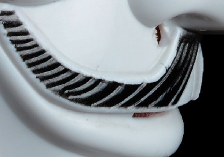

I'm building decentralized #aiagents and the Inori Network: a native AVS (Actively Validated Service) for AI Agents. I've also accidentally become the spiritual leader of the $AVB community token.
On July 13th, 2018 the U.S. Department of Justice indicted twelve Russian members of the GRU (the Russian Federation’s Main Intelligence Directorate of the General Staff) on charges…
Read More
…and what we found was quite surprising: the emails had not been sent from her account, but were received from an external account and then filed in her Sent folder automatically.
Read More…they’ve started receiving reports that their website/product/API is down. Because someone made it go to bed early: welcome to the terrifying world of SLEEP().
Read More